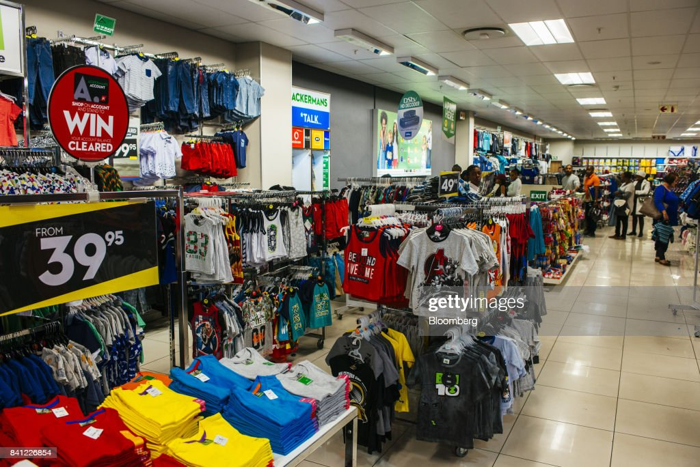
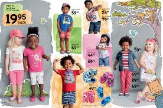
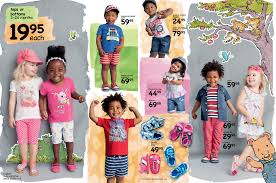
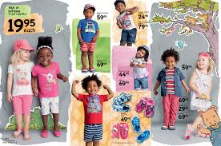

 

ACKERMANS

It is hard to get excited after looking at Ackermans & Van Haaren's (EBR:ACKB) recent performance, when its stock has declined 8.6% over the past month. However, a closer look at its sound financials might cause you to think again. Given that fundamentals usually drive long-term market outcomes, the company is worth looking at. In this article, we decided to focus on Ackermans & Van Haaren's ROE.
Return on Equity or ROE is a test of how effectively a company is growing its value and managing investors’ money. In simpler terms, it measures the profitability of a company in relation to shareholder's equity.